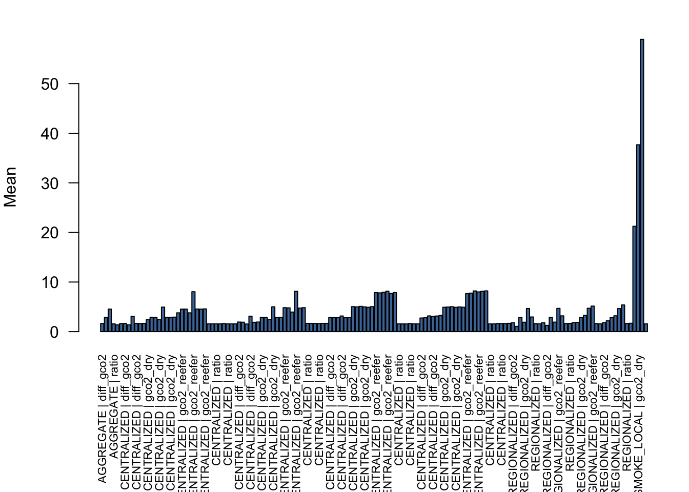

Scenario Explorer
| Scenario | Variant | Powertrain | Metric | Mean | Var | P05 | P50 | P95 |
|---|---|---|---|---|---|---|---|---|
| AGGREGATE | aggregate | NA | diff_gco2 | 1.63909 | 0.713316 | 0.345154 | 1.74594 | 4.0139 |
| AGGREGATE | aggregate | NA | diff_gco2_gt_zero | 0.958445 | NA | NA | NA | NA |
| AGGREGATE | aggregate | NA | gco2_dry | 2.90471 | 2.01885 | 0.163914 | 2.75951 | 5.91145 |
| AGGREGATE | aggregate | NA | gco2_reefer | 4.5438 | 4.96516 | 1.48947 | 4.24092 | 8.76023 |
| AGGREGATE | aggregate | NA | ratio | 1.56675 | 0.00937741 | 1.41187 | 1.56125 | 1.73304 |
| CENTRALIZED | CENTRALIZED_BEV_DRY | bev | diff_gco2 | 1.37153 | 0.503178 | NA | NA | NA |
| CENTRALIZED | CENTRALIZED_BEV_DRY | bev | diff_gco2 | 1.63207 | 0.707097 | NA | NA | NA |
| CENTRALIZED | CENTRALIZED_BEV_DRY | bev | diff_gco2 | 1.63909 | 0.713316 | NA | NA | NA |
| CENTRALIZED | CENTRALIZED_BEV_DRY | bev | diff_gco2 | 1.37153 | 0.503178 | NA | NA | NA |
| CENTRALIZED | CENTRALIZED_BEV_DRY | bev | diff_gco2 | 3.10813 | 2.6365 | NA | NA | NA |
| CENTRALIZED | CENTRALIZED_BEV_DRY | bev | diff_gco2 | 1.64997 | 0.752119 | NA | NA | NA |
| CENTRALIZED | CENTRALIZED_BEV_DRY | bev | diff_gco2 | 1.65937 | 0.68705 | NA | NA | NA |
| CENTRALIZED | CENTRALIZED_BEV_DRY | bev | gco2_dry | 2.42089 | 1.35637 | NA | NA | NA |
| CENTRALIZED | CENTRALIZED_BEV_DRY | bev | gco2_dry | 2.90805 | 2.07704 | NA | NA | NA |
| CENTRALIZED | CENTRALIZED_BEV_DRY | bev | gco2_dry | 2.90471 | 2.01885 | NA | NA | NA |
| CENTRALIZED | CENTRALIZED_BEV_DRY | bev | gco2_dry | 2.42089 | 1.35637 | NA | NA | NA |
| CENTRALIZED | CENTRALIZED_BEV_DRY | bev | gco2_dry | 4.94294 | 6.12847 | NA | NA | NA |
| CENTRALIZED | CENTRALIZED_BEV_DRY | bev | gco2_dry | 2.90541 | 2.01791 | NA | NA | NA |
| CENTRALIZED | CENTRALIZED_BEV_DRY | bev | gco2_dry | 2.92907 | 1.82957 | NA | NA | NA |
| CENTRALIZED | CENTRALIZED_BEV_DRY | bev | gco2_reefer | 3.79242 | 3.39583 | NA | NA | NA |
| CENTRALIZED | CENTRALIZED_BEV_DRY | bev | gco2_reefer | 4.54012 | 5.02303 | NA | NA | NA |
| CENTRALIZED | CENTRALIZED_BEV_DRY | bev | gco2_reefer | 4.5438 | 4.96516 | NA | NA | NA |
| CENTRALIZED | CENTRALIZED_BEV_DRY | bev | gco2_reefer | 3.79242 | 3.39583 | NA | NA | NA |
| CENTRALIZED | CENTRALIZED_BEV_DRY | bev | gco2_reefer | 8.05107 | 16.3028 | NA | NA | NA |
| CENTRALIZED | CENTRALIZED_BEV_DRY | bev | gco2_reefer | 4.55538 | 5.06561 | NA | NA | NA |
| CENTRALIZED | CENTRALIZED_BEV_DRY | bev | gco2_reefer | 4.58844 | 4.58352 | NA | NA | NA |
| CENTRALIZED | CENTRALIZED_BEV_DRY | bev | ratio | 1.56919 | 0.0105401 | NA | NA | NA |
| CENTRALIZED | CENTRALIZED_BEV_DRY | bev | ratio | 1.566 | 0.00977837 | NA | NA | NA |
| CENTRALIZED | CENTRALIZED_BEV_DRY | bev | ratio | 1.56675 | 0.00937744 | NA | NA | NA |
| CENTRALIZED | CENTRALIZED_BEV_DRY | bev | ratio | 1.56919 | 0.0105401 | NA | NA | NA |
| CENTRALIZED | CENTRALIZED_BEV_DRY | bev | ratio | 1.63078 | 0.0103699 | NA | NA | NA |
| CENTRALIZED | CENTRALIZED_BEV_DRY | bev | ratio | 1.56636 | 0.00913175 | NA | NA | NA |
| CENTRALIZED | CENTRALIZED_BEV_DRY | bev | ratio | 1.56919 | 0.0105401 | NA | NA | NA |
| CENTRALIZED | CENTRALIZED_BEV_REEFER | bev | diff_gco2 | 1.93662 | 0.954744 | NA | NA | NA |
| CENTRALIZED | CENTRALIZED_BEV_REEFER | bev | diff_gco2 | 1.90471 | 0.968715 | NA | NA | NA |
| CENTRALIZED | CENTRALIZED_BEV_REEFER | bev | diff_gco2 | 1.5402 | 0.594139 | NA | NA | NA |
| CENTRALIZED | CENTRALIZED_BEV_REEFER | bev | diff_gco2 | 3.1212 | 2.65745 | NA | NA | NA |
| CENTRALIZED | CENTRALIZED_BEV_REEFER | bev | diff_gco2 | 1.88157 | 0.895237 | NA | NA | NA |
| CENTRALIZED | CENTRALIZED_BEV_REEFER | bev | gco2_dry | 2.90553 | 1.99053 | NA | NA | NA |
| CENTRALIZED | CENTRALIZED_BEV_REEFER | bev | gco2_dry | 2.89493 | 2.0687 | NA | NA | NA |
| CENTRALIZED | CENTRALIZED_BEV_REEFER | bev | gco2_dry | 2.40962 | 1.46383 | NA | NA | NA |
| CENTRALIZED | CENTRALIZED_BEV_REEFER | bev | gco2_dry | 5.00623 | 6.36986 | NA | NA | NA |
| CENTRALIZED | CENTRALIZED_BEV_REEFER | bev | gco2_dry | 2.8675 | 1.92311 | NA | NA | NA |
| CENTRALIZED | CENTRALIZED_BEV_REEFER | bev | gco2_reefer | 4.84215 | 5.53293 | NA | NA | NA |
| CENTRALIZED | CENTRALIZED_BEV_REEFER | bev | gco2_reefer | 4.79964 | 5.70101 | NA | NA | NA |
| CENTRALIZED | CENTRALIZED_BEV_REEFER | bev | gco2_reefer | 3.94982 | 3.81073 | NA | NA | NA |
| CENTRALIZED | CENTRALIZED_BEV_REEFER | bev | gco2_reefer | 8.12744 | 16.7259 | NA | NA | NA |
| CENTRALIZED | CENTRALIZED_BEV_REEFER | bev | gco2_reefer | 4.74907 | 5.27014 | NA | NA | NA |
| CENTRALIZED | CENTRALIZED_BEV_REEFER | bev | ratio | 1.6681 | 0.0105586 | NA | NA | NA |
| CENTRALIZED | CENTRALIZED_BEV_REEFER | bev | ratio | 1.66047 | 0.0107446 | NA | NA | NA |
| CENTRALIZED | CENTRALIZED_BEV_REEFER | bev | ratio | 1.64601 | 0.0109697 | NA | NA | NA |
| CENTRALIZED | CENTRALIZED_BEV_REEFER | bev | ratio | 1.62684 | 0.0106532 | NA | NA | NA |
| CENTRALIZED | CENTRALIZED_BEV_REEFER | bev | ratio | 1.65989 | 0.0110084 | NA | NA | NA |
| CENTRALIZED | CENTRALIZED_DIESEL_DRY | diesel | diff_gco2 | 2.82785 | 2.08687 | NA | NA | NA |
| CENTRALIZED | CENTRALIZED_DIESEL_DRY | diesel | diff_gco2 | 2.82226 | 2.06305 | NA | NA | NA |
| CENTRALIZED | CENTRALIZED_DIESEL_DRY | diesel | diff_gco2 | 2.83007 | 2.13894 | NA | NA | NA |
| CENTRALIZED | CENTRALIZED_DIESEL_DRY | diesel | diff_gco2 | 3.15708 | 2.5121 | NA | NA | NA |
| CENTRALIZED | CENTRALIZED_DIESEL_DRY | diesel | diff_gco2 | 2.79529 | 2.09643 | NA | NA | NA |
| CENTRALIZED | CENTRALIZED_DIESEL_DRY | diesel | gco2_dry | 5.04098 | 6.09237 | NA | NA | NA |
| CENTRALIZED | CENTRALIZED_DIESEL_DRY | diesel | gco2_dry | 4.99405 | 5.96038 | NA | NA | NA |
| CENTRALIZED | CENTRALIZED_DIESEL_DRY | diesel | gco2_dry | 5.10352 | 6.06911 | NA | NA | NA |
| CENTRALIZED | CENTRALIZED_DIESEL_DRY | diesel | gco2_dry | 4.99576 | 5.84798 | NA | NA | NA |
| CENTRALIZED | CENTRALIZED_DIESEL_DRY | diesel | gco2_dry | 4.91578 | 5.89826 | NA | NA | NA |
| CENTRALIZED | CENTRALIZED_DIESEL_DRY | diesel | gco2_reefer | 7.86883 | 14.8274 | NA | NA | NA |
| CENTRALIZED | CENTRALIZED_DIESEL_DRY | diesel | gco2_reefer | 7.81631 | 14.5348 | NA | NA | NA |
| CENTRALIZED | CENTRALIZED_DIESEL_DRY | diesel | gco2_reefer | 7.93359 | 14.8771 | NA | NA | NA |
| CENTRALIZED | CENTRALIZED_DIESEL_DRY | diesel | gco2_reefer | 8.15284 | 15.5103 | NA | NA | NA |
| CENTRALIZED | CENTRALIZED_DIESEL_DRY | diesel | gco2_reefer | 7.71106 | 14.5386 | NA | NA | NA |
| CENTRALIZED | CENTRALIZED_DIESEL_DRY | diesel | ratio | 1.56649 | 0.00850346 | NA | NA | NA |
| CENTRALIZED | CENTRALIZED_DIESEL_DRY | diesel | ratio | 1.56905 | 0.00977595 | NA | NA | NA |
| CENTRALIZED | CENTRALIZED_DIESEL_DRY | diesel | ratio | 1.55689 | 0.0101013 | NA | NA | NA |
| CENTRALIZED | CENTRALIZED_DIESEL_DRY | diesel | ratio | 1.6366 | 0.0108598 | NA | NA | NA |
| CENTRALIZED | CENTRALIZED_DIESEL_DRY | diesel | ratio | 1.57079 | 0.00967331 | NA | NA | NA |
| CENTRALIZED | CENTRALIZED_DIESEL_REEFER | diesel | diff_gco2 | 2.75144 | 2.10105 | NA | NA | NA |
| CENTRALIZED | CENTRALIZED_DIESEL_REEFER | diesel | diff_gco2 | 2.80076 | 2.12185 | NA | NA | NA |
| CENTRALIZED | CENTRALIZED_DIESEL_REEFER | diesel | diff_gco2 | 3.17606 | 2.24969 | NA | NA | NA |
| CENTRALIZED | CENTRALIZED_DIESEL_REEFER | diesel | diff_gco2 | 3.1058 | 2.57894 | NA | NA | NA |
| CENTRALIZED | CENTRALIZED_DIESEL_REEFER | diesel | diff_gco2 | 3.15093 | 2.60524 | NA | NA | NA |
| CENTRALIZED | CENTRALIZED_DIESEL_REEFER | diesel | gco2_dry | 4.92237 | 5.84592 | NA | NA | NA |
| CENTRALIZED | CENTRALIZED_DIESEL_REEFER | diesel | gco2_dry | 4.96748 | 6.01384 | NA | NA | NA |
| CENTRALIZED | CENTRALIZED_DIESEL_REEFER | diesel | gco2_dry | 5.03584 | 5.27546 | NA | NA | NA |
| CENTRALIZED | CENTRALIZED_DIESEL_REEFER | diesel | gco2_dry | 4.91287 | 5.85537 | NA | NA | NA |
| CENTRALIZED | CENTRALIZED_DIESEL_REEFER | diesel | gco2_dry | 4.98648 | 5.95569 | NA | NA | NA |
| CENTRALIZED | CENTRALIZED_DIESEL_REEFER | diesel | gco2_reefer | 7.67382 | 14.4421 | NA | NA | NA |
| CENTRALIZED | CENTRALIZED_DIESEL_REEFER | diesel | gco2_reefer | 7.76825 | 14.7752 | NA | NA | NA |
| CENTRALIZED | CENTRALIZED_DIESEL_REEFER | diesel | gco2_reefer | 8.2119 | 13.9744 | NA | NA | NA |
| CENTRALIZED | CENTRALIZED_DIESEL_REEFER | diesel | gco2_reefer | 8.01867 | 15.7252 | NA | NA | NA |
| CENTRALIZED | CENTRALIZED_DIESEL_REEFER | diesel | gco2_reefer | 8.13741 | 15.9299 | NA | NA | NA |
| CENTRALIZED | CENTRALIZED_DIESEL_REEFER | diesel | ratio | 1.56047 | 0.00921769 | NA | NA | NA |
| CENTRALIZED | CENTRALIZED_DIESEL_REEFER | diesel | ratio | 1.56644 | 0.00969412 | NA | NA | NA |
| CENTRALIZED | CENTRALIZED_DIESEL_REEFER | diesel | ratio | 1.63434 | 0.0100554 | NA | NA | NA |
| CENTRALIZED | CENTRALIZED_DIESEL_REEFER | diesel | ratio | 1.634 | 0.0104132 | NA | NA | NA |
| CENTRALIZED | CENTRALIZED_DIESEL_REEFER | diesel | ratio | 1.63447 | 0.0109259 | NA | NA | NA |
| REGIONALIZED | REGIONALIZED_BEV_DRY | bev | diff_gco2 | 1.80051 | 0.462419 | NA | NA | NA |
| REGIONALIZED | REGIONALIZED_BEV_DRY | bev | gco2_dry | 2.86486 | 1.00657 | NA | NA | NA |
| REGIONALIZED | REGIONALIZED_BEV_DRY | bev | gco2_reefer | 4.66538 | 2.68487 | NA | NA | NA |
| REGIONALIZED | REGIONALIZED_BEV_DRY | bev | ratio | 1.63078 | 0.0103699 | NA | NA | NA |
| REGIONALIZED | REGIONALIZED_BEV_REEFER | bev | diff_gco2 | 1.80237 | 0.464528 | NA | NA | NA |
| REGIONALIZED | REGIONALIZED_BEV_REEFER | bev | gco2_dry | 2.89012 | 1.04409 | NA | NA | NA |
| REGIONALIZED | REGIONALIZED_BEV_REEFER | bev | gco2_reefer | 4.6925 | 2.74481 | NA | NA | NA |
| REGIONALIZED | REGIONALIZED_BEV_REEFER | bev | ratio | 1.62684 | 0.0106532 | NA | NA | NA |
| REGIONALIZED | REGIONALIZED_DIESEL_DRY | diesel | diff_gco2 | 1.82733 | 0.436993 | NA | NA | NA |
| REGIONALIZED | REGIONALIZED_DIESEL_DRY | diesel | gco2_dry | 2.88962 | 0.955969 | NA | NA | NA |
| REGIONALIZED | REGIONALIZED_DIESEL_DRY | diesel | gco2_reefer | 4.71695 | 2.53137 | NA | NA | NA |
| REGIONALIZED | REGIONALIZED_DIESEL_DRY | diesel | ratio | 1.6366 | 0.0108598 | NA | NA | NA |
| REGIONALIZED | REGIONALIZED_DIESEL_REEFER | diesel | diff_gco2 | 1.80382 | 0.456111 | NA | NA | NA |
| REGIONALIZED | REGIONALIZED_DIESEL_REEFER | diesel | gco2_dry | 2.85464 | 0.969576 | NA | NA | NA |
| REGIONALIZED | REGIONALIZED_DIESEL_REEFER | diesel | gco2_reefer | 4.65845 | 2.61146 | NA | NA | NA |
| REGIONALIZED | REGIONALIZED_DIESEL_REEFER | diesel | ratio | 1.634 | 0.0104132 | NA | NA | NA |